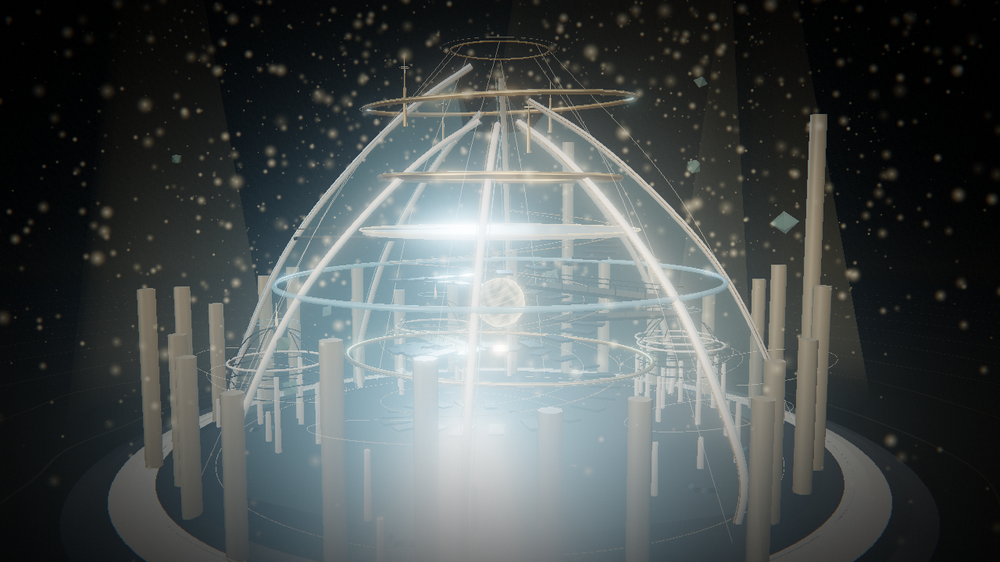

VOICE → ARCHITECTURE
让声音，
成为建筑。
Every voice has a space.
ECHOFORM · 声音建筑师
01 / 07
FROM SIGNAL TO STRUCTURE
一句话，
长出一座空间。
音高 · 节奏 · 音色
成为形体、层次与光。
成为形体、层次与光。
录音 / 上传音频 / 聆听示例
02 / 07
THREE STYLES / 01
CRYSTAL SANCTUM
水晶圣殿
Light through the bones of sound.
尖拱与晶簇交织，
让光穿过声音的骨骼。
让光穿过声音的骨骼。
03 / 07
THREE STYLES / 02
NEO MACHINE
未来机械
A machine built for the signal.
承重环、金属骨架与光栅，
让节奏成为空间的语法。
让节奏成为空间的语法。
04 / 07
THREE STYLES / 03
FLUID ORGANIC
流体有机
A space that breathes.
弧面、薄膜与柔软的腔体，
让建筑缓缓呼吸。
让建筑缓缓呼吸。
05 / 07
ENTER YOUR OWN VOICE
走进你的声音。
自由漫游，发现每一个角落。
空间漫游海报导出视频导出
浏览器里的声音建筑实验
06 / 07

OPEN SOURCE · MIT
SOUND BECOMES SPACE.
ECHOFORM
把你的声音，留在空间里。
建模与初版代码 · DeepSeek V4.1 Flash 1017
TRY IT LIVE
kang340.github.io/echoform
EXPLORE ON GITHUB
github.com/kang340/echoform
给你的下一句话，一座建筑。
07 / 07